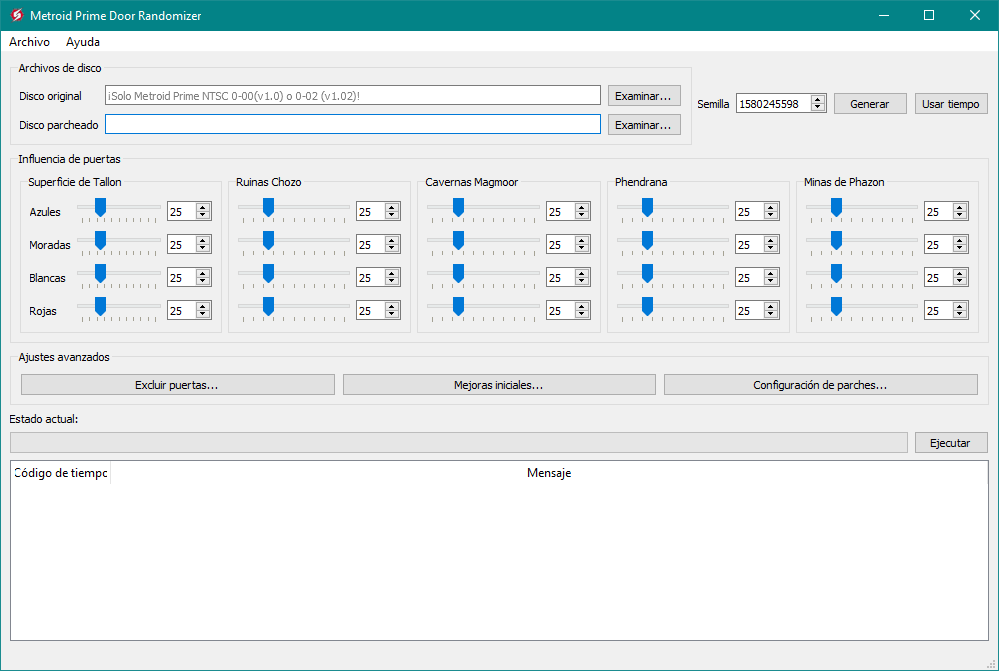

Interfaz de usuario

Ventana principal de MPDR
Metroid Prime Door Randomizer se divide en varias secciones. Cómo usar cada una de ellas se cubre en el apartado Configurando MPDR.
- Archivos de disco: Aquí se indica dónde se encuentra la imagen de Metroid Prime a parchear, y dónde debe ser guardada.
- Semilla: Donde se puede cambiar la semilla.
- Influencia de puertas: Estos deslizadores permiten cambiar la influencia de cada tipo de puertas por zonas.
- Ajustes avanzados: Estos botones muestran ventanas con más opciones avanzadas de MPDR.
- Estado actual: Esta sección reporta la información del proceso de parcheo del juego. También contiene el botón para iniciar el randomizador.
También cuenta con un menú en la parte superior de la ventana
- Archivo... Este menú cubre todas las operaciones con los perfiles.
- Ayuda... Este menú cubre todo lo relacionado con ayuda para el usuario.